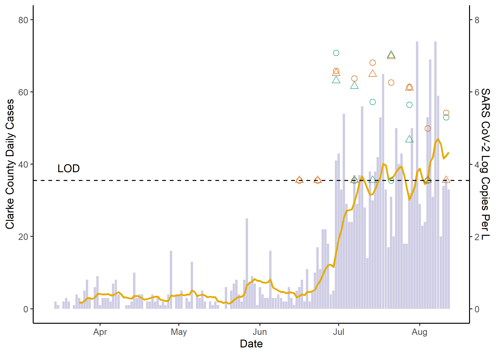

Sewage samples are collected weekly from water reclamation facilities that serve Athens Clarke County (WRF A and WRF B). Samples are tested to detect and measure SARS-CoV-2, the virus that causes COVID-19.
We measure the virus by detecting two genes specific to SARS-CoV-2, the N1 and N2 nucleocapsid genes, using RT-qPCR. These gene targets (N1 and N2) are measured and reported as a concentration (in copies per liter of wastewater). Note that the viral copies per liter are shown in a log scale, such that log 5, for example, equals 10^5 copies or 100,000 copies per liter. The theoretical limit of detection (LOD) is noted.
We predict that the changes in the concentration of SARS-CoV-2 in wastewater will reflect the trends of COVID-19 infection circulating in the community. The daily number of newly reported COVID-19 cases in Athens-Clarke County (grey) appear alongside the 10-day moving average of new cases (yellow). Changes in SARS-CoV-2 in wastewater may precede changes in reported cases because of lags in clinical testing.